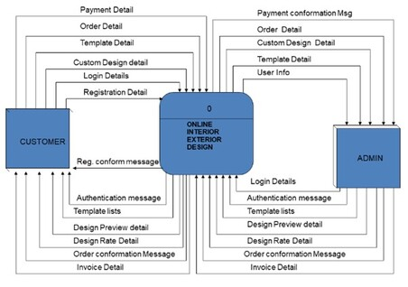
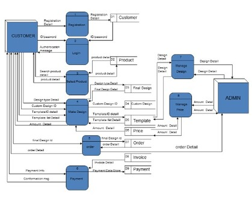
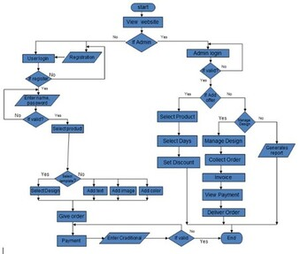

Projects
Stone Paper Scissor (JavaFX)
Each player simultaneously selects one of the three options (Rock, Paper, or Scissors). The winner of the round is determined based on the combination of choices made by both players according to the above rules. If both players choose the same option, the round is a tie, and the game continues.


Dell Info (HTML)
Information about Dell Laptop Acquisitions,Acquisition of EMC,Dell facilities,Manufacturing,Security,Commercial aspects,Environmental record,Criticism


Interior Exterior Design Website (ASP.net)
The profession of interior design has been a consequence of the development of society and the complex architecture that has resulted from the development of industrial processes. The pursuit of effective use of space, user well-being and functional design has contributed to the development of the contemporary interior design profession. In ancient India, architects used to work as interior designers. Architects would also employ craftsmen or artisans to complete interior design for their buildings. Interior decorating emerged as a profession in the Western world. Types of interior design include residential design, commercial design, hospitality design, healthcare design, universal design, exhibition design, spatial branding, etc.
  Yatzy Score Tracker App (PHP)
Creating a web site that will allow users to add their own scores to the high score list.The screenshot is the visual verification of the score, so we will ask users to upload (submit) a screen shot of their high score, to be displayed along with their name and score. Scores will be displayed on the web page highest to lowest. In Part two of the application, the administrator will login and manage the score, verifying the screenshot.